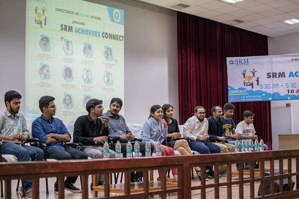

Achiever's Connect
-

SRM Achievers Connect’19
SRM Achievers’ Connect ’19 was held on January 19, 2019. The event commenced with the welcome address delivered by Professor Venkataramani, Director of Alumni Affairs, SRM IST. Mr.Sai Prasad, Senior Director at CBRE South Asia (Batch of 1993, Civil) gave the opening talk, emphasizing on how students should focus on having both technical skills and the skills to handle people.He was followed by Mr. Kritik Abiram Govindan,Chief Operating Officer, Anjanasoft (Batch of 1995, ECE) who elaborated on his journey from SRM to the United States. Mr. Anand T, Assistant General Manager at Vestas (Batch of 1995, ECE) explained about the SWOT analysis which is Strength , Weakness , Opportunities and Threats faced in business.
-

SRM Achievers Connect’18(July)
ELEVEN Alumni from various backgrounds enthralled the audience with their perspectives at the SRM Achievers Connect on 14th July.
- Arokiya Inian (Mech-1991 ,Founder & Director at Eminent Systems and Services Pvt. Ltd.)
- Christy Rayan (Civil-1991 ,AVP - Retail Branch Banking, HDFC Bank)
- Deepak Gurijala (Auto-2012, Founder/CEO - Street Lamp Games)
- Coneenika Choudhuri (EEE-2013, ISB Hyderabad)
- Divya Ram (Genetic-2015 ,Miss Capital of India 2017)
- Sushen Tamkoria (Mech - 2016, Management Trainee at TATAsky)
- Karan Mehta (BioMed-2016 ,MS- Monash University, Australia)
- Himansu Pandey (E&I - 2016, Advisor to AP Government & Coordinator -TATA Trust)
- Shashank Shekhar (CS 2017 ,Founder at Stoned Santa)
- Lakshay Arora (CS 2017 ,Engineer at Amazon)
- Venkatagiri Ramesh (Mech-2018, Externship - Hyperverge Inc)
- Anshul Jain (CS 2020, UC Berkeley)
- Ashit Gupta (CS 2020 ,UC Berkeley)
-

SRM Achievers Connect’18(January)
The second edition of SAC was successfully held on 20 Jan, 2018 at the Biotechnology Seminar Hall, SRMIST, Kattankulathur. The chief guest was Madhan Shanmugasundaram (1993 Civil, Director, Infosys). The panel speakers were Kuzali Nandagopal (BE Bio-info, 2009, Manager, Catholic Syrian Bank), Prabhu Natarajan (M.Tech Embeded Systems 2009, Analyst, TCS), Chandan Jaiswal (B.Tech Info & Telecom, 2012, Lead, Travel Markplace, Paytm), Abdul Sayeed (B.Tech Aero, 2013, Senior Engineer, Honeywell), Ayush Srivastava (B.Tech EEE, 2017, Creative Content Head, Wittyfeed), Rachit Gulati (B.Tech EEE, 2014, Author of Affairs Life & Love Something), Guru Prakaksh (B.Tech CSE 2015, Founder & CEO, Xobin), Daniel Nath (B.Tech CSE, 2017, Partner, inFeedo).
-

SRM Achievers Connect’17(March)
The event took place on 19th March. Students from the first and second years were present. The issues covered included how to choose the career, how to get core jobs and becoming an entrepreneur.
Panel Discussion:
- Abhinav Gandhi - SAP student at MIT
- Ramesh Soni '14 - Researcher at IIT-Madras
- Ashutosh Yadav '14 - Masters student at University of Augsburg, Germany
Talk & Doubt Clearing Session:
- Nandula Subrahmanyam ‘16 - Royal Enfield
- Chakshu Ishan Kaplan ’17 - XAT-98%
- Nitesh Sharma ’17 - Intern at Codebrahma
-
Mussum ipsum cacilds, vidis litro abertis. Consetis adipiscings elitis. Pra lá , depois divoltis porris, paradis. Paisis, filhis, espiritis santis. Mé faiz elementum girarzis, nisi eros vermeio, in elementis mé pra quem é amistosis quis leo. Manduma pindureta quium dia nois paga. Sapien in monti palavris qui num significa nadis i pareci latim. Interessantiss quisso pudia ce receita de bolis, mais bolis eu num gostis.
-
Mussum ipsum cacilds, vidis litro abertis. Consetis adipiscings elitis. Pra lá , depois divoltis porris, paradis. Paisis, filhis, espiritis santis. Mé faiz elementum girarzis, nisi eros vermeio, in elementis mé pra quem é amistosis quis leo. Manduma pindureta quium dia nois paga. Sapien in monti palavris qui num significa nadis i pareci latim. Interessantiss quisso pudia ce receita de bolis, mais bolis eu num gostis.